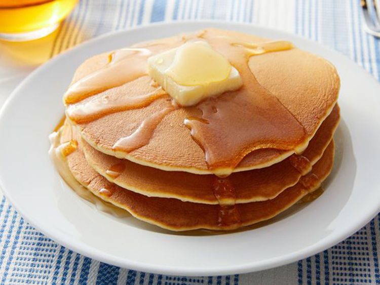

Pancakes

This easy pancake recipe doesn’t require much thought early in the
morning and the pancakes taste great!
Ingredients
- Flour
- Sugar
- Baking powder
- Salt
- Milk and oil
- Eggs
Steps
- Gather all your ingredients.
-
Combine flour, sugar, baking powder, and salt in a large bowl; make a
well in the center. Pour in milk, oil, and egg; mix until smooth.
-
Heat a lightly oiled griddle or frying pan over medium-high heat. Pour
or scoop about ¼ cup batter per pancake onto the griddle; cook until
bubbles form and the edges are dry, 1 to 2 minutes. Flip; cook until
browned on the other side. Repeat with remaining batter.
- Serve hot and enjoy!
Home